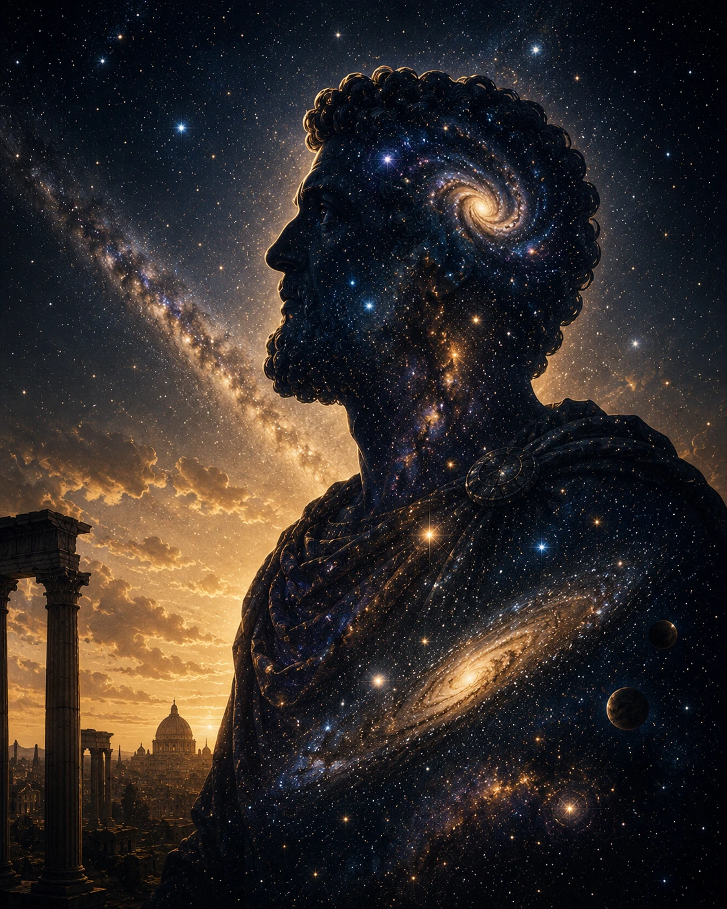

Meet the Author
Marcos Garcia
Marcos Garcia is an independent author and illustrator with a lifelong fascination with history, philosophy, and the stranger edges of science. Drawing on years spent exploring ancient sites and chasing offbeat ideas, his books sit in the space between careful reasoning and wide-eyed wonder.
He writes for curious readers who like their facts a little unconventional and their questions bigger than the answers — creating richly illustrated books meant to be pored over, not just read.
